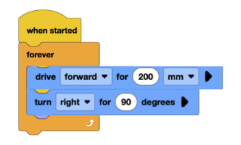
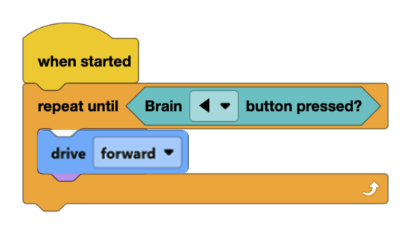

Lesson 8: Loops
Lesson Objectives
- Learn how loops work in VEXcode
- Use loops to create a program that helps their robot traverse a path
Materials Needed
- Computers (1-2 per group)
- Basebots
- VEXcodeIQ Website
- Notebooks and writing utensils for each student
Lesson Procedure
1. Overview
- In this lesson, students will gain an understanding of what loops are and how the different types work. They will also get experience in how to use different types of loops in their program to execute the robot functions
2. Getting Started
- Prompt the students with a couple of real-world questions listed below, and let them share in small groups. Highlight the use of loops in real-world scenarios.
- Discussion Prompts:
- Imagine you want your robot to go through a maze. How would you program your robot if there are patterns in the way it moves? Would you add more blocks of code as you go, or would it be easier to repeat parts of the code?
- What are the benefits of reducing unnecessary repetition in your code?
- Where in real life do you think loops could be helpful?
- When might you use a repeat loop versus a forever loop?
- Introduce the loops with a quick activity: Repeat loop
- Objective: Drive the robot forward 3 times for 200 mm each
- Without loops: Add the “drive forward” block for 200mm three times.
- With loops: Add a “repeat 3” loop with one “drive forward” block for 200mm in the loop.
- Class discussion: Which format do you like better and why?
- Ask: Which code looks cleaner? How could this loop be useful if you have more code?
- Watch this quick introductory video on loops:
VEXcode IQ Blocks - "Using Loops" Tutorial - Use THESE NOTES and have the class take a couple of notes on loops
- Then, introduce them to the different loop blocks in VEXcodeIQ from the Logic section and explain how these blocks can be used to set conditions for repeated actions of the robot.
- Allow the students to experiment with the code for a couple of minutes:
3. Monitoring Progress
- Allow the students to go through a series of tasks to increase their familiarity with the loops
- Have the students use their computers and set up a drivebase like they did in in previous lessons. Make sure that the ports selected are correct!
- Task 1: Forever loop
- Ask the students to create a program where the bot will drive in a circle continuously (like a square with sides of 200mm) using the forever loop.
- They should hear a click when they add the blocks, and then download and run the program.
- The program might look like this:

- Task 2: Repeat Until Loop
- Ask the students to create a program where the robot drives forward until a button on the brain is pressed using the repeat until loop.
- The program might look like this:

4. Wrapping Up
- Now, students will use what they learned to brainstorm how to make the robot go in a zigzag line: (Around 5 minutes)
- Students should work with their groups to try and figure out this task. If a group is unable to figure it out, they can collaborate with other groups and share their ideas.
- To conclude, have a short class discussion about how each group solved the problem, and what their favorite types of loops are!
Assessment
- Students understand what the different types of loops are, how they are used, why they are used, and the benefits they offer.
- Students understand how to use different loops to make their programs more efficient and easier to understand.
Preparation for next class
In the next class, the students will share their approach to a task of their choice from class today and review their notes about loops.